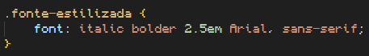

Fontes em CSS
Família da fonte
Para colocar uma fonte em css, você deve usar o parâmetro de estilo "font-family:#;""
Ex: stlye="font-family: Arial;"
Se o nome da família da fonte for com duas palavras, deve ser colocado entre aspas simples.
Ex: stlye="font-family: 'Courier New';"
Nem todo dispositivo terá todas as fontes instaladas, por isso é bom ter várias fontes secundárias. Você pode colocar fontes secundárias após uma vírgula no parâmetro "font-family:#;".
Ex: stlye="font-family: Arial, Helvetica, sans-serif;"
Nesse exemplo, o site exibirá a fonte Arial, se ela não estiver disponível, ele exibirá a fonte Helvetica, se ela também não estiver disponível, ele exibirá qualquer fonte sem serifa disponível, devido ao comando sans-serif. Esse método de colocar várias fontes secundárias se chama Safe Combination. Sempre termine sua safe combination com uma fonte genérica (sans-serif, por exemplo).
Fontes recomendadas:
- Arial (sans-serif)
- Verdana (sans-serif)
- Tahoma (sans-serif)
- Trebuchet MS (sans-serif)
- Times New Roman (serif)
- Georgia (serif)
- Garamond (serif)
- Courier New (monospace)
- Brush Script MT (cursive)
Tamanho da fonte
Para configurar o tamanho da fonte na tela, usa-se o estilo font-size:#;.
Existem dois tipos de medida para fonte, as medidas relativas e as medidas absolutas.
Medidas absolutas:
- cm (Centímetro)
- mm (Milímetro)
- in (Polegadas)
- px (Pixels)
- pt (Pontos)
- pc (Pica)
Essas medidas não se adaptarão ao dispositivo, se mantendo independente do tamanho da tela. A única recomendada é a medida em Pixels.
Medidas relativas:
- em (Relativo ao M maiúsculo da fonte)
- ex (Relativo ao x minúsculo da fonte)
- rem (Relativo ao root, a fonte do body)
- vw (Relativo a largura da viewport, ou seja a tela)
- vh (Relativo a altura da viewport)
- %
Essas medidas se adaptarão ao dispositivo, se adaptando ao tamanho da tela. A única recomendada é a medida em em.
16 pixels é o tamanho padrão da fonte.
1 em é o tamanho padrão da fonte.
Peso da fonte
Para definir o peso de uma fonte se utiliza o parametro de estilo font-weight:#;
Algumas fontes apresentam diversos tipos de peso:
- lighter
- light
- normal
- bold
- bolder
O peso controla a "grossura" do caractere, e todos os pesos foram citados respectivamente do mais fino para o mais grosso na lista anterior.
Nem todas as fontes apresentam todos os pesos disponíveis.
Você também pode usar valores numéricos para definir a grossura da fonte no parametro font-weight:#;, esses valores vão de 100 a 900; do mais fino para o mais grosso.
Estilo de fonte
Para modificar o estilo de uma fonte usamos o parametro de estilo font-style:#;.
As fontes também podem apresentar estilos diferentes. Esses estilos são:
- normal
- italic
- oblique
Nem todas as fontes apresentam todos os estilos disponíveis.
A diferença entre o oblíquo para o itálico é que o itálico modifica o formato dos glifos, já o oblíquo não, ele apenas inclina para a direita. Porém os dois servem para o mesmo propósito.
Comandos shorthand
Existem vários comandos do tipo shorthand para diferentes funções, eles permitem a você simplificar o código juntando vários parametros de estilo em um só. É possivel utilizar isso com o comando font.
Você pode simplificar a configuração de fonte com um comando que passa todos os estilos de uma vez. Esse comando é o font:#;.
Nele você deve inserir os valores OBRIGATORIAMENTE na seguinte ordem:
font: font-style font-weight font-size font-familyex:
